静かな季（とき）
静御前の椿の言い伝えから名づけました
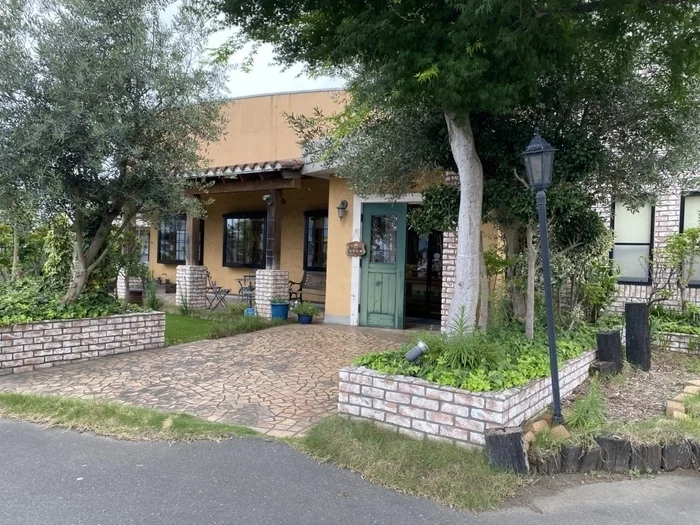
depuis 1987
1987年創業
Mont Joli
この町の名前を持つお菓子を、焼いております。
SÔWA NATUREL GÂTEAUX
静御前の椿の言い伝えから名づけました
地元の関戸不動尊にちなんで名づけました
旧「総和」に字をかけました
このあたりは、かつて総和という名の町でした。当店は、この土地の言い伝えや名所から名前をいただいた焼き菓子を、長く焼き続けております。名前ごと、この町の味としてお持ち帰りいただければ幸いです。
この三つは、いずれも焼き菓子でございます。このほかにも取り揃えております。
スノーボールやスティックケーキなど、日々の焼き菓子を種類豊富にご用意しております。贈り物には、お包みや詰め合わせも承ります。ひとつからでも、どうぞお気軽にお求めください。
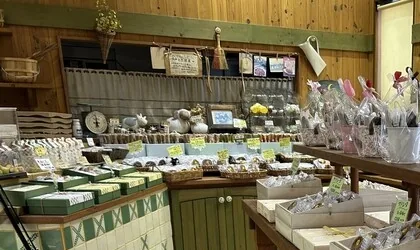
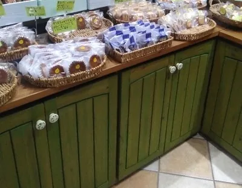
定番の品から季節の品まで、その日の生ケーキをショーケースにご用意しております。迷われたときは、どうぞお気軽にお尋ねください。
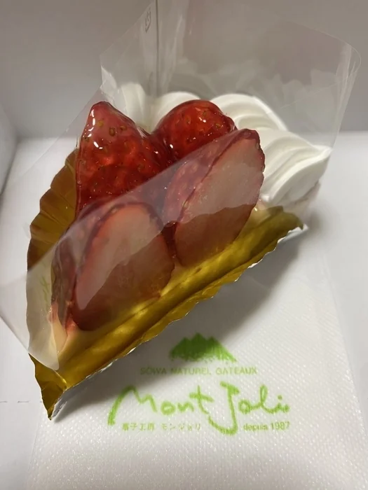
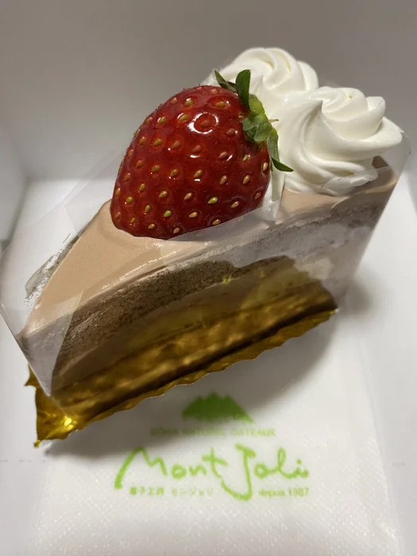
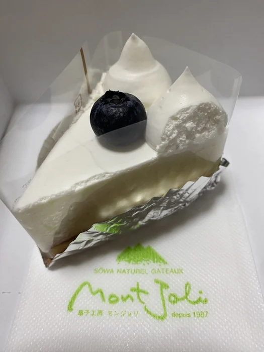
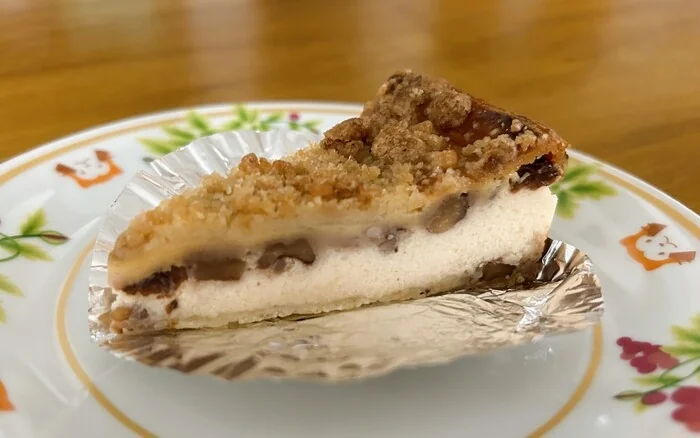
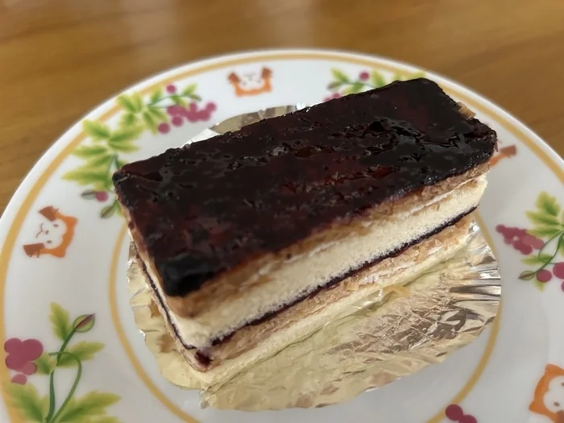
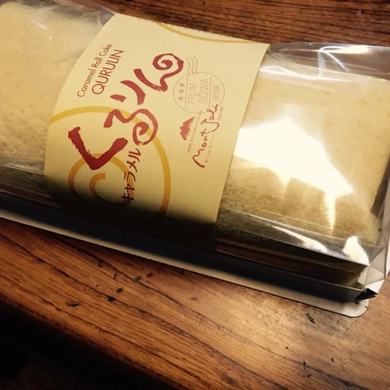
「バターの香り溢れるパイに甘さ控えめのブルーベリージャム。全てが手づくりのロングセラー」
ブルーベリーミルフィユの値札から
「コクのあるタルト生地に5種類の木の実のキャラメリゼをたっぷりと」
ハニーアーモンドの値札から
MATÉRIAUX
「良い材料を選ぶこと」。それが美味しいお菓子作りの第一歩だと考えております。大量にお作りすることはできませんが、そのぶん質を大切にしております。フルーツはできるだけ地元のものを選び、ジャムも地元の素材で手づくりしております。愛する総和の町より、自然の素材を生かした表情豊かなお菓子の詰め合わせをお届けします。
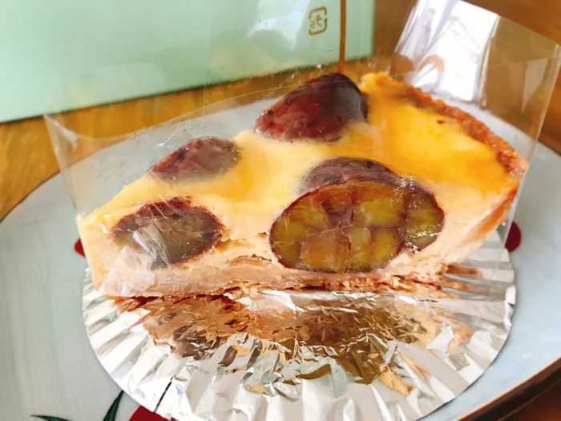
庭の木々も建物も、お菓子と同じように手をかけております。ご来店の折には、ゆっくりご覧いただければ幸いです。
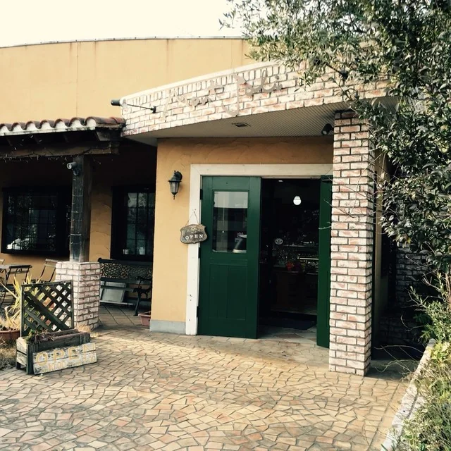
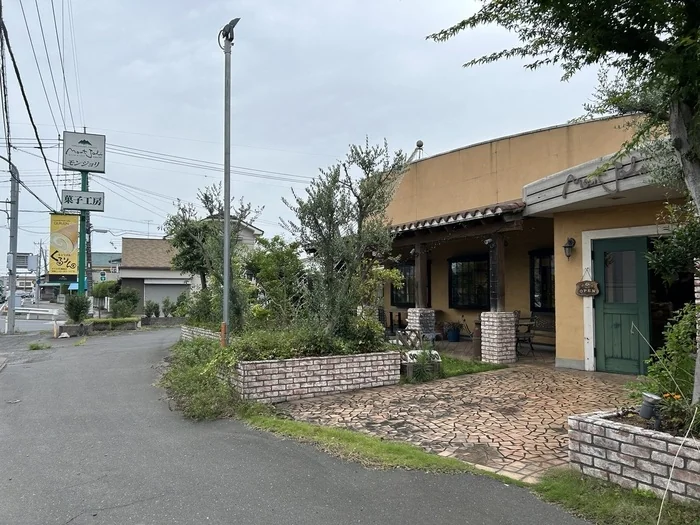
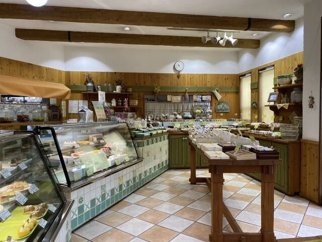
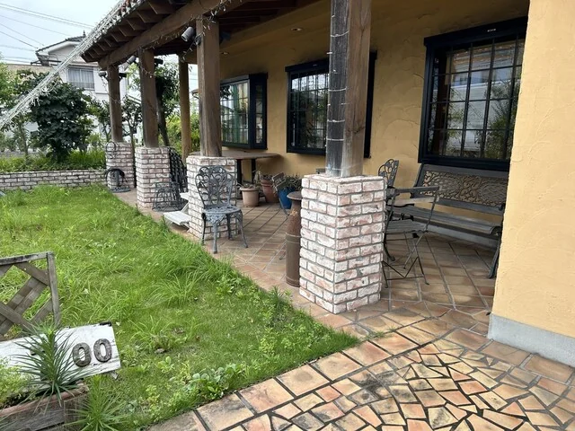
お寄せいただいた言葉を、そのままご紹介いたします。
「店内は甘い匂いに包まれていて、どのお菓子を選んでも、とても美味しいです！！ケーキも色々種類があり、美味しい！！ 友人へのプレゼントや、御遣い物にも利用させて頂いてます。」
お客様の声より
「キャラメル風味の美味しいロールケーキ『キャラメルくるりん』推し♪」
お客様の声より
「ずっと変わらずに美味しいです。ケーキは季節のものから、定番のものまでどれも本当に美味しい」
お客様の声より
国道125号沿い、小堤の交差点の角にございます。ご不明な点は、お電話にてお気軽にお問い合わせください。
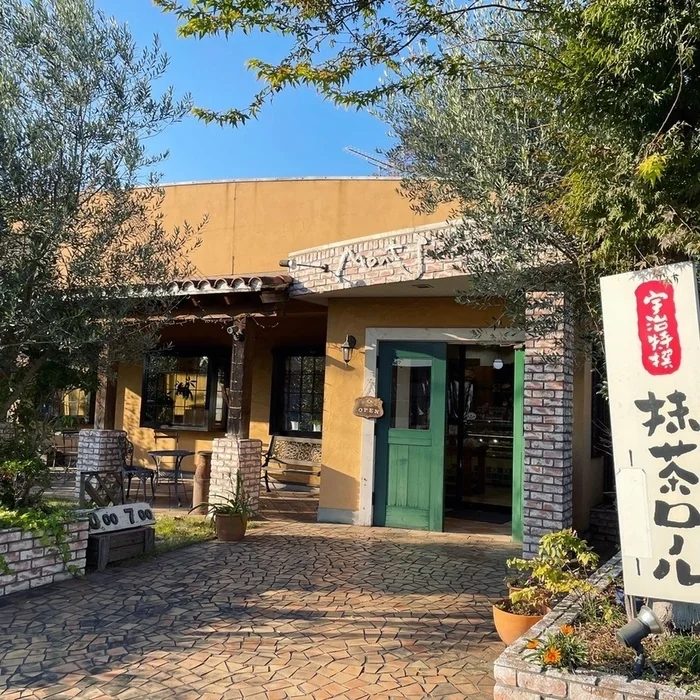
| 住所 | 〒306-0231 茨城県古河市小堤1417-1 |
|---|---|
| 電話 | 0280-98-0022 |
| 営業時間 | 10:00〜19:00 |
| 定休日 | 火曜日月曜日がお休みとなる週もございます。おでかけ前にお電話でお確かめください。 |